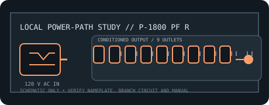

[ RACKMOUNT LINE CONDITIONER // EXACT MODEL ]
Furman P-1800 PF R
15 A rack power conditioner combining AC filtering, surge shutdown and Power Factor Technology; its 45+ A instantaneous reservoir is not a continuous-current rating.

ARCHIVAL IDENTIFICATION: Preserve exact model and regional suffix, nameplate, serial/date code, outlet map, manual revision and observed condition. Similar product-family names do not prove electrical equivalence.
Model specifications
| Manufacturer / exact model SKU | Furman P-1800 PF R. Verify full regional suffix and revision from the physical nameplate. |
|---|---|
| Catalog category / topology | Line conditioners — rackmount AC conditioner. No battery or stored-energy backup. |
| Input voltage / supported range | 120 V AC nominal North American supply; no voltage-regulation/capture window is specified because this conditioner does not regulate the line. |
| Output voltage / range | Nominal 120 V AC line-through output; output follows source voltage. |
| Capacity / current | 15 A continuous aggregate rating; Power Factor Technology provides a separate 45+ A instantaneous current reservoir (not a 45 A continuous output rating). |
| Regulation / conditioning functions | SMP surge protection, LiFT linear AC filtering, EVS shutdown, isolated outlet banks, and Power Factor Technology for high transient current demand. |
| Outlets / connectors | Nine total: eight rear-panel outlets and one front convenience outlet. |
| Response / continuity | No AVR transfer/correction time; output remains line-through. Datasheet specifies 1 ns response for surge protection; current-reservoir function serves transient demand, not outage runtime. |
| Compatibility | 120 V rack equipment within the shared 15 A continuous limit; the 45+ A peak reservoir is intended for transient draw and is not additional branch-circuit capacity. |
| Electrical safety / installation limits | Use grounded 15 A input and obey the aggregate rating. Do not treat peak-current reserve as permission to overload the branch circuit. Preserve protective earth; inspect for heat, damage and loose plugs. |
Service and archival notes
- Record the AC source, loaded current, connected equipment, observed voltage and test conditions separately from manufacturer-rated values.
- This is a conditioning/distribution appliance, not a UPS: it cannot maintain output through a mains interruption.
- Never open energized mains equipment. Quarantine units with damaged cords, overheated connectors, compromised enclosure or grounding, or evidence of liquid ingress.
- Use the exact regional manual/nameplate for connector, branch-circuit, mounting, grounding and load requirements; this static record is not an installation approval.
Manufacturer sources and manual
- Furman manufacturer product page — P-1800 PF RProduct-family overview and manufacturer-stated functions. Confirm the complete model label and regional variant.
- Furman official operating manual — P-1800 PF RManufacturer instructions for ratings, connections, operation and electrical safety.
- Furman official datasheet — P-1800 PF RManufacturer model specifications; ratings and feature details are revision-sensitive.